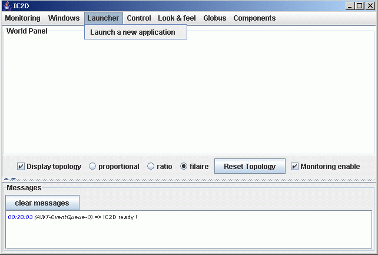
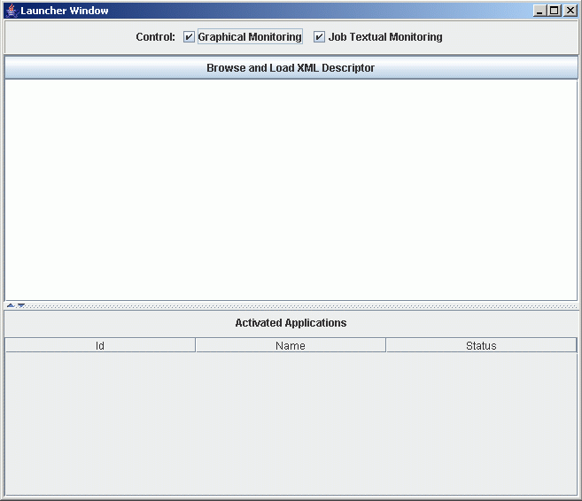

Launcher
Principles
The launcher allows users to launch applications directly from an XML
descriptor file, without any script. The new XML descriptor is nearly the
same as classical descriptor files, the syntax is only extended.
The deployment will be done in two different phasis.
first, a new node, a "main node" will be created and activated and then,
it is this node that will deploy the rest of the application.
MainDefinition tag
A new tag has been introduced, just before the component definition tag.
This tag is named "mainDefinition" and its syntax is :
|
<mainDefinition id="mainID" class="theClassToLaunchContainingAMainMethod">
<arg value="param1">
<arg value="param2">
<mapToVirtualNode value="main-Node"/>
</mainDefinition>
|
|
Eventually, several mains might be defined so the id allows to
identify all mainDefinitions.
The class attribute is the path where can be found the class to launch.
This class MUST contain a main method.
Then any number of parameters can be declared in arg tags. The parameters
will be given to the main method in the same order the were declared.
And finally a mapToVirtualNode tag will link the main info to virtual node,
declared with the same name in the virtualNodeDefinitions tag
(in componentDefinition).
This is a complete example of a launchable descriptor:
|
<?xml version="1.0" encoding="UTF-8"?>
<ProActiveDescriptor xmlns:xsi="http://www.w3.org/2001/XMLSchema-instance" xsi:noNamespaceSchemaLocation="DescriptorSchema.xsd">
< !-- -->
< componentDefinition>
< virtualNodesDefinition>
< virtualNode name="Dispatcher" property="unique_singleAO"/>
< virtualNode name="Renderer"/>
< /virtualNodesDefinition>
< /componentDefinition>
< deployment>
< register virtualNode="Dispatcher"/>
< mapping>
< map virtualNode="Dispatcher">
< jvmSet>
< currentJVM/>
< /jvmSet>
< /map>
< map virtualNode="Renderer">
< jvmSet>
< vmName value="Jvm1"/>
< vmName value="Jvm2"/>
< vmName value="Jvm3"/>
< vmName value="Jvm4"/>
< /jvmSet>
< /map>
< /mapping>
< jvms>
< jvm name="Jvm1">
< creation>
< processReference refid="localJVM"/>
< /creation>
< /jvm>
< jvm name="Jvm2">
< creation>
< processReference refid="localJVM"/>
< /creation>
< /jvm>
< jvm name="Jvm3">
< creation>
< processReference refid="localJVM"/>
< /creation>
< /jvm>
< jvm name="Jvm4">
< creation>
< processReference refid="localJVM"/>
< /creation>
< /jvm>
< /jvms>
< /deployment>
< infrastructure>
< processes>
< processDefinition id="localJVM">
< jvmProcess class="org.objectweb.proactive.core.process.JVMNodeProcess">
< /processDefinition>
< /processes>
< /infrastructure>
</ProActiveDescriptor>
|
|
API
The Launcher class is located in the package org.objectweb.proactive.core.descriptor.
To use it you will have to create a new instance of the launcher with the path of
the XML descriptor (this descriptor must contain a mainDefinition tag).
The constructor will parse the file and reify a ProActiveDescriptor.
You only have to call the activate() method on the launcher instance to launch
the application.
For example:
Launcher launcher = new Launcher ("myDescriptor.xml") ;
launcher.activate() ;
you can also get the ProActiveDescriptor built by the launcher by calling the
getDescriptor() method on the launcher instance.
ProActiveDescriptor pad = launcher.getDescriptor() ;
Launcher in IC2D
You will find the launcher in the launcher menu, in the menu bar. Click then on
launch a new application.

Now it opens a new window proposing you to browse your file system for a XML
descriptor and load it into a descriptors list. A right click on the list items
allows you to launch (activate) the application. Two checkbox control
the graphical monitoring and textual job monitoring
your application.

You can kill the applications launched with from a popupmenu
in the "activated applications" table.
Copyright
© November 2005 INRIA All Rights Reserved.